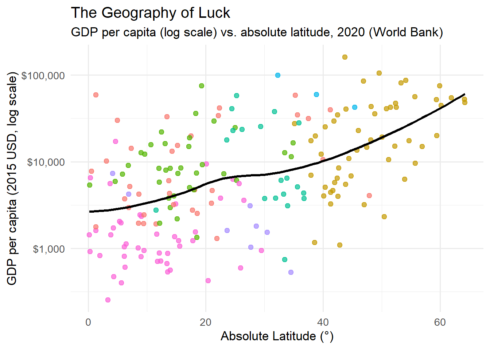
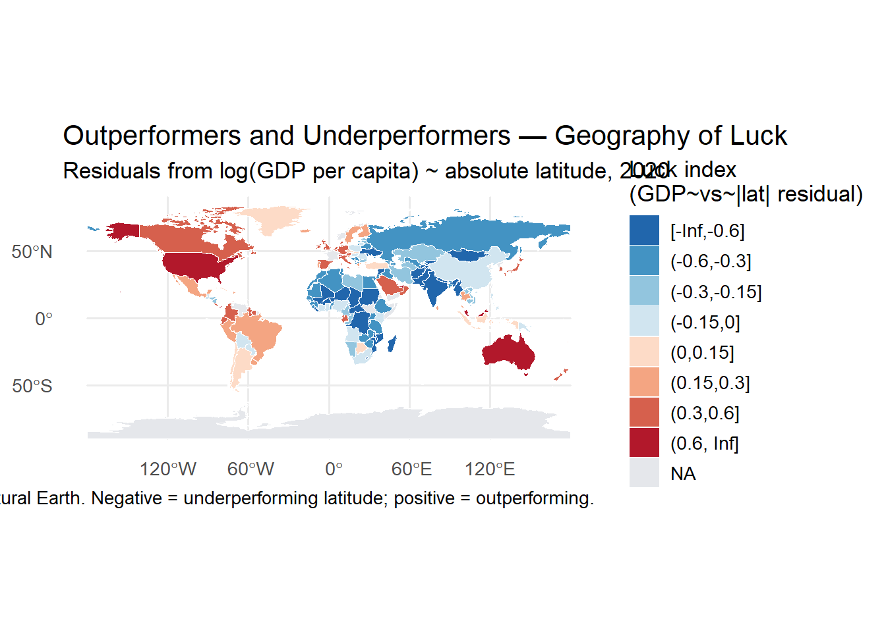

The fortune of birthplaces and borders — tracing how chance and geography conspire to shape our destinies.
geography
sociology
economics
What we call “luck” often begins with latitude and longitude. This story uncovers how place, mobility, and systems intertwine to shape the fortunes of people and nations.
“Where the sun sits higher, shadows of inequality grow shorter — but never quite disappear.”
💡 Premise
If you were to spin a globe and stop it at random, the odds of landing somewhere prosperous are not uniform. Latitude has long acted as the silent architect of opportunity — shaping climate, agriculture, disease, and, through them, destiny.
This story asks: Does geography still rule luck in the 21st century?
🌐 Data Sources
We combine multiple open datasets (2020 snapshot for a clean cross-section):
Theme
Source
Indicator
Economic output
World Bank
GDP per capita (constant USD, NY.GDP.PCAP.KD)
Health
World Bank
Life expectancy at birth (SP.DYN.LE00.IN)
Geography
Natural Earth
Country boundaries + ISO3 (for joins)
🌱 First Glance — The Shape of Prosperity
Code
# GDP vs |latitude|ggplot(wb, aes(abs_lat, gdp)) +geom_point(aes(color = region), alpha = .7, size =2, show.legend =FALSE) +geom_smooth(method ="loess", se =FALSE, color ="black") +scale_y_log10(labels =label_dollar()) +labs(title ="The Geography of Luck",subtitle ="GDP per capita (log scale) vs. absolute latitude, 2020 (World Bank)",x ="Absolute Latitude (°)", y ="GDP per capita (2015 USD, log scale)")

Reading: Prosperity tends to rise away from the equator, plateau in the mid‑latitudes, and soften again near the poles — a climatic parabola of fortune.
💰 Beyond Wealth — Life Follows Latitude
Code
# Life expectancy vs |latitude|wb |>ggplot(aes(abs_lat, life)) +geom_point(alpha = .6, size =2, color ="#555") +geom_smooth(method ="loess", se =FALSE, color ="#111") +labs(title ="Latitude vs. Life Expectancy",subtitle ="Life expectancy at birth vs. absolute latitude, 2020",x ="Absolute Latitude (°)", y ="Years")
Reading: Health shadows wealth: life expectancy arcs with latitude, but with notable outliers.
🌍 Exceptions — When Geography Loses (Residuals)
We fit a simple model of wealth on latitude and look for countries that outperform what geography alone would predict.
Code
# Fit on complete cases only, then join residuals back by iso3cwb_cc <- wb |> dplyr::filter(is.finite(gdp_log), is.finite(abs_lat), !is.na(iso3c))model_simple <-lm(gdp_log ~ abs_lat, data = wb_cc)res_tbl <- tibble::tibble(iso3c = wb_cc$iso3c, resid_gdp_lat =unname(resid(model_simple)))wb <- wb |> dplyr::left_join(res_tbl, by ="iso3c") |> dplyr::mutate(luck_index =as.numeric(scale(resid_gdp_lat)))# Top/bottom outperformers by residuals (ignore NA)out_top <- wb |> dplyr::filter(!is.na(resid_gdp_lat)) |> dplyr::slice_max(resid_gdp_lat, n =10) |> dplyr::select(country, region, resid_gdp_lat)out_bot <- wb |> dplyr::filter(!is.na(resid_gdp_lat)) |> dplyr::slice_min(resid_gdp_lat, n =10) |> dplyr::select(country, region, resid_gdp_lat)knitr::kable(out_top, digits =2, caption ="Top 10 'Lucky Defiers' — richer than latitude alone predicts (log residual)")
Top 10 ‘Lucky Defiers’ — richer than latitude alone predicts (log residual)
country
region
resid_gdp_lat
Singapore
East Asia & Pacific
1.42
Cayman Islands
Latin America & Caribbean
1.18
Bermuda
North America
1.06
Brunei Darussalam
East Asia & Pacific
1.05
Monaco
Europe & Central Asia
1.05
Qatar
Middle East & North Africa
0.95
Guam
East Asia & Pacific
0.93
Virgin Islands (U.S.)
Latin America & Caribbean
0.88
Hong Kong SAR, China
East Asia & Pacific
0.86
United Arab Emirates
Middle East & North Africa
0.82
Code
knitr::kable(out_bot, digits =2, caption ="Bottom 10 — poorer than latitude alone predicts (log residual)")
Bottom 10 — poorer than latitude alone predicts (log residual)
country
region
resid_gdp_lat
Afghanistan
South Asia
-1.26
Kyrgyz Republic
Europe & Central Asia
-1.10
Syrian Arab Republic
Middle East & North Africa
-1.09
Madagascar
Sub-Saharan Africa
-1.09
Mozambique
Sub-Saharan Africa
-1.05
Tajikistan
Europe & Central Asia
-0.99
Burundi
Sub-Saharan Africa
-0.99
Ukraine
Europe & Central Asia
-0.92
Lesotho
Sub-Saharan Africa
-0.91
Niger
Sub-Saharan Africa
-0.86
Interpretation: High‑performers often pair trade centrality, education, or resource rents with policy stability. Under‑performers frequently face governance or conflict frictions.
🗺️ Optional Map — The Luck Index (Residual Choropleth)
A choropleth map of the residuals (“luck index”) highlights countries that over‑ or under‑perform relative to their absolute latitude.
Code
# Luck-index choropleth (guarded)if (isTRUE(has_ne)) {# Merge residuals back to geometry map_dat <- dat |> dplyr::left_join(wb |> dplyr::select(iso3c, resid_gdp_lat), by =c("iso_a3"="iso3c"))# Breaks for a symmetric diverging map around zero residual brks <-c(-Inf, -0.6, -0.3, -0.15, 0, 0.15, 0.3, 0.6, Inf) map_dat$res_bin <-cut(map_dat$resid_gdp_lat, breaks = brks, include.lowest =TRUE)# Plotggplot(map_dat) +geom_sf(aes(fill = res_bin), color ="white", size =0.1) +scale_fill_brewer(type ="div", palette ="RdBu", direction =-1, na.value ="#e5e7eb",name ="Luck index(GDP~vs~|lat| residual)") +labs(title ="Outperformers and Underperformers — Geography of Luck",subtitle ="Residuals from log(GDP per capita) ~ absolute latitude, 2020",caption ="Data: World Bank (WDI), Natural Earth. Negative = underperforming latitude; positive = outperforming.") +theme(legend.position ="right")} else {message("Optional map disabled: install.packages(c('sf','rnaturalearth','rnaturalearthdata')) to enable the choropleth.")}

How to read:Blue shades underperform their latitude (negative residuals); red shades outperform (positive residuals). Neutral grays are missing data.
💭 Reflection
The sun may rise for everyone, but it still shines longer for some.
Latitude once dictated agriculture, disease, and labor. Today, it still whispers through economies — a relic of environmental inheritance.
Yet each bright outlier on the map is a defiance of fate: policy and ingenuity turning geography into geography’s undoing.
Transforms:log10(GDP per capita); residuals from lm(gdp_log ~ abs_lat)
CRS: EPSG:4326 (WGS84)
Reproducibility: Set a specific year for comparability; extend to multi‑year to track weakening/strengthening latitude effects.
Code
# Time evolution — correlation weakening/strengthening over time (1980–2023)hist <-WDI(indicator =c(gdp ="NY.GDP.PCAP.KD"),start =1980, end =2023, extra =TRUE) |> janitor::clean_names() |> dplyr::filter(region !="Aggregates") |> dplyr::mutate(# make sure latitude is numeric before abs()latitude =suppressWarnings(readr::parse_number(as.character(latitude))),abs_lat =abs(latitude),gdp_log =log10(gdp) ) |> dplyr::group_by(year) |> dplyr::summarize(r_lat_gdp =cor(abs_lat, gdp_log, use ="complete.obs"),.groups ="drop" )ggplot(hist, aes(year, r_lat_gdp)) +geom_line() +labs(title ="Latitude–Wealth Correlation Over Time",x ="Year", y ="Correlation r (|lat| vs log GDP per capita)" )